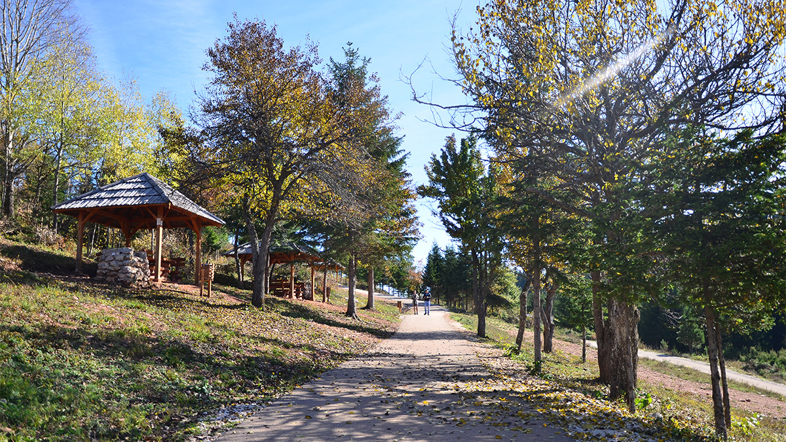

Južno od Starog Grada u Sarajevu nalazi se planina Trebević, čiji su padinski dijelovi postali sastavni dio grada. Vrh Trebevića se nalazi na 1629 m nadmorske visine, a planina se prema istoku nadovezuje se na planinu Jahorinu. Od centra grada je udaljen cestovnim putem oko 12 km, usponom preko padinskih mahala može se doći pješice za oko sat i trideset minuta. Trebević od davnina predstavlja glavno izletište Sarajlija. Povoljan geografski položaj, nadmorska visina, blaga klima i prirodne ljepote usadili su se u srca zaljubljenika u prirodu. Sa sarajevskim mahalama na svojim padinama predstavlja jedinstven sklad urbanog i prirodnog, a kompletan prostor odlikuje velika bioraznolikost.
Ne zna se tačno porijeklo imena planine Trebević, ali se pretpostavlja da je na području ove planine nekada bio žrtvenik posvećen nekom od slavenskih bogova, vjerovatno Perunu, pa je tako ostala i riječ „trebevište” (od trijebiti). U Osmanskom periodu su nastale brojne mahale na obroncima planine prema gradu, a za vrijeme austrougarske vladavine značaj Trebevića je naglo porastao, prije svega s vojnog aspekta, jer se s njegovih padina mogao vidjeti cijeli grad, te je stoga izgrađeno i nekoliko vojnih utvrda.
S vremenom raste značaj Trebevića kao izletišta, te se tada njegove padine počinju pošumljavati, a staze za pješake i planinare uređivati u svrhu rekreacionog turizma. Za potrebe održavanja takmičenja u okviru 14. Zimskih olimpijskih igara koje su se održale 1984. godine, na Trebeviću je 1982. izgrađena staza za bob i sankanje, koja je u tom trenutku bila najsavremenija na svijetu. Tokom agresije, pretrpljena su velika razaranja, a nakon završetka opsade Sarajeva, na Trebeviću je ostala pustoš. Ipak, zahvaljujući velikoj ljubavi Sarajlija prema ovoj planini, polako, ali sigurno joj se vraća nekadašnji sjaj, obnavljanjem postojećih i izgradnjom novih sadržaja.
Zaljubljenicima u prirodu mogu posjetiti i mogu uživati u prelijepom pogledu na panoramu Sarajeva, kao i u šetnji prirodom do izletišta Brus ili Prvi šumar u blizini hotela Pino Nature. Moguć je i obilazak ostataka olimpijske bob staze i opservatorija Čolina kapa, ali i opuštanje u nekom od brojnih ugostiteljskih objekata, kao što su Pino Nature, Brus, Trebevićki raj, Level Up i Vila Andrea. Bilo da ste ljubitelj aktivnog odmora u prirodi, ili se više volite opustiti uz pucketanje vatre u kaminu, ovo će vam mjesto svojim saržajima pružiti nezaboravan ugođaj.